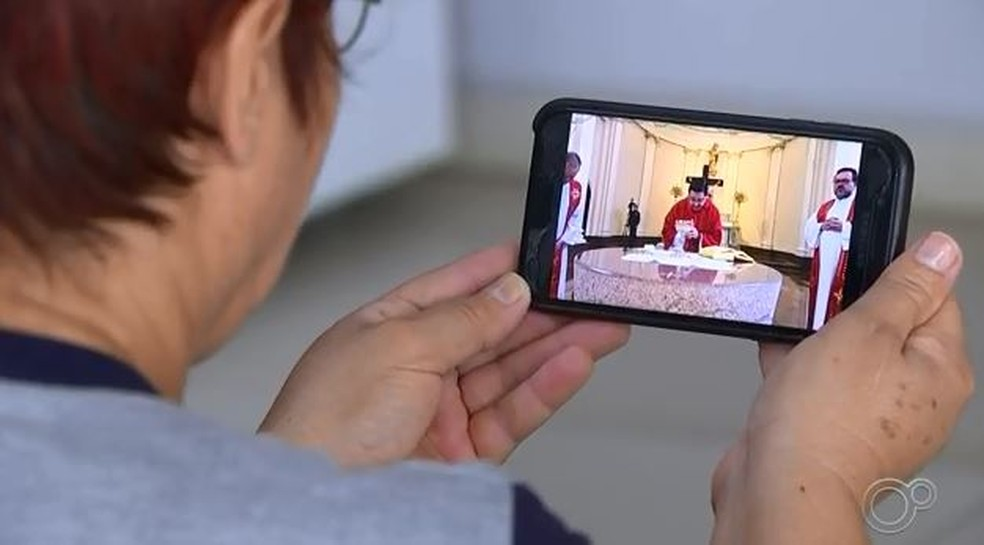

Religare > História
História do Religare
por Equipe CNT
Atualizado em 10/Junho/2020
A ideia surge em um brainstorm realizado no ano de 2020, precisamente no mês de março, em meio a dolorosa pandemia da covid 19. Queríamos algo de extrema simplicidade que desse às pessoas apoio, força, conforto, mesmo sem saber como faríamos isso ao certo; já tínhamos perdido muito da liberdade, alguns a renda e a sanidade sem falar das 34.954 mortes (esses são os números até o momento em que escrevo esse relato no dia 05/06/2020). Só tivemos um caminho que possibilitasse essa contribuição: a fé.
Por motivos de prevenção as igrejas fecharam suas portas, mas apenas fisicamente, pois continuaram com a transmissão de suas missas pela internet. A Religare Cnt tem como principal pretensão possibilitar a interação dos membros da Igreja Católica com os demais membros dessa comunidade e também disponibilizar conteúdos multimídia, tentando aproximar essas pessoas de sua rotina o mais próximo do normal.
